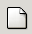
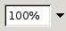

The Standard Toolbar
The standard toolbar is shown in Figure 2.

{kind=link}
The Standard Toolbar gives the user access to file operations, printing, movement of data blocks, the undo system, and to some of the powerful tools like the function creator and the graphing system.
-  New File.
Create a new file.
 Open
Open
Open an existing file.
 Save
Save
Save the current worksheet to disk.
 Print
Print
Print the current worksheet to a file or a printer.
 Print Setup
Print Setup
Display a print preview of the current worksheet.
 Cut
Cut
Copy the cells in the current selection to the clipboard buffer and mark them to be deleted from the current position. The cells will only be removed if they are pasted into a new position.
- Copy
Copy the cells in the current selection to the clipboard buffer.
 Paste
Paste
Paste the contents of the clipboard buffer into the active cell.
 Undo
Undo
Undoes the last operation undertaken.
- Redo
This is the reverse of the undo operation, restoring its orginal state.
 Sum into the current cell
Sum into the current cell
Starts a simple sum formula in the selected cell with Gnumeric simply waiting for a selection to be made to complete the sum. The user selects the destination cell, pushes this button, enters the range to be summed and pushes the confirm button (green arrow) in the data entry area or types the Return key.
- The function guru
This button will start a formula in the current cell using the function guru.
 Sort Ascending
Sort Ascending
Sorts the selected region in ascending order based on the first column selected.
 Sort Descending
Sort Descending
Sorts the selected region in descending order based on the first column selected.
 Graph
Graph
This button calls the graph guru to create a graph.
 Insert Object
Insert Object
This button will insert a component object into the current worksheet. Components are the way that the GNOME project has chosen to enable certain programs to use others within themselves. Gnumeric is able to use the Guppi plotting program and the Dia diagramming program in this way.
 Insert Shaped Component
Insert Shaped Component
This button allows user to insert a component into Gnumeric that is not a simple rectangle but may have an arbitrary shape. This functionality is currently not used but provided for future needs.
-  Zoom
The zoom button allows the users to tradeoff the extent of the worksheet which is visible against the size of the visible text and cells.